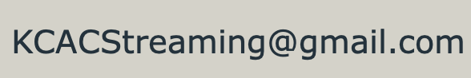

KCAC
📝COVID Contact Tracing📝
📝新冠防疫追踪📝
COVID screening, contact tracing and masking is still required for in person service. 受难日崇拜请使用‘英文崇拜’进行登记 Please use 'English Service' when signing up for Good Friday Service |
Registration is currently limited occupancy.
If you need to cancel or edit your registration, contact Stephen by Email📧
根据省政府规定，目前允许教会部分容量的会众参加聚会。
如果您需要取消或更改您的报名表请通過電子郵件联系孔传道。

‼️Each adult has to register separately, even if living together. However, parents may register on behalf of their children under 18.‼️
If your family share the same device when filling the screenning, only one screenshot needs to make.
每位成年人需要独自报名，父母可以为18岁以下的子女报名。
如果您和您的家人使用同一个设备填写健康筛查，截图只需要截一张即可。
Your browser must support Javascript.
We use cookie to ensure the accuracy of screening.
Data in cookies will only be store and process on your local device and will not be send to anyone.
您的浏览器必须支持Javascript。
我们用cookie技术保障接触追踪填报系统的准确性。
这些数据仅储存在您设备本地并由您的设备处理，并不会被发送到我们或第三方。
Information Collected is only for contact tracing
采集信息仅会用作接触追踪
Please be ready to take screenshot of your screening result.
请准备好对您的筛查结果截图。
Select language
请选择语言
English 中文
If you are experiencing technical difficulty, please contact!
如果您遇到了技术问题，请联系我们！

🏠Back to Home🏠